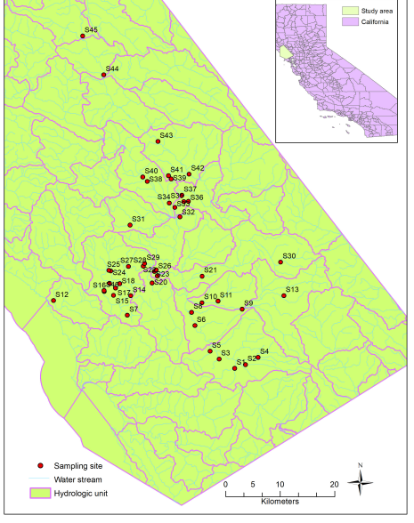

Method of Source Tracking
Waterway Impairments
LPBF Pollution Source Tracking- The Watershed Approach
- Water Quality Monitoring
- On the ground source tracking
- GIS and mapping of everything
- Education at all levels
- “Partners”- Coordination with agencies
Monitoring Water Quality
- First Step- We monitor the main river and all major tributaries.
- Understanding the water quality throughout the watershed- along the main stem of the river and contributions of each tributary.
- Gives first indication of where the pollution is entering the system
- Allows us to approach agencies and interested parties with factsin-hand. (Make the issue worth their time, energy, money)
- In time, allows us to track progress.
Tracking Sources
- Big point sources (large direct discharge pipes),
- Small point sources (small direct discharge pipes),
- Non-point sources (contaminants flow over land).
- For waterways impaired for fecal coliform and/or dissolved oxygen, this is imperative.
- We perform on the ground door-to-door inspections and assistance
- Research on LDEQ’s EMDS (Electronic Document Management System) website to locate information on permitted commercial facilities.
- However, facility may not be permitted. Historic disconnect between LDHH and LDEQ.
GIS/ Mapping
- Excellent tool to visually synthesize data
- Shows potential sources in relation to each other and waterways
- GPS units inexpensive- some under $100.
- Good free tools- Google Map- on LPBF website, www.saveourlake.org
Education
When pollutants enter our waterways, they become
contaminated and, according to the Clean Water Act, have
“impaired” water quality. Impairments restrict uses such as
primary contact (swimming), secondary contact (boating), and
fish and oyster production.
To clean the waterway, we have to address the pollution
sources within the watershed (all of the land contributing
pollution to the river and its tributaries).
LPBF began water quality monitoring in 1994, upgrading the program in 2001. Based on results
from our program, we began the watershed approach in 2002, piloting the program on the Bogue
Falaya Watershed in St. Tammany Parish. So far, we have worked in the Bogue
Falaya/Abita/Tchefuncte Watershed (St. Tammany Parish), the Tangipahoa Watershed
(Tangipahoa Parish), and the Tickfaw Watershed (Tangipahoa,
St. Helena, and Livingston Parishes).
Our approach has been multidisciplinary
We find that it is important to invest in professional monitoring with quality assurance. Volunteer monitoring is not viewed to be of the same high standard and may be disregarded. Also, monitoring must be performed on a regular basis for months to years to track progress.
LPBF uses a step-wise process to track pollution sources:
We track point sources first because they are easiest to find and are likely contributing much of the problem in urban setting. Tracking Point Sources- Wastewater Sources


LPBF performs education at any and all levels, from the general
public, to school children, to voters, to decision-makers.
Data analysis
Weather Data
Daily mean temperature and daily precipitation data during 2011–2023 were obtained from PRISM time-series
datasets, which are available online1. Daily climate data provided by the PRIMS climate group have a spatial
resolution of 4 km. The methods for generating the climate data were described previously. Four weather variables
were created, including daily mean temperature on the sampling date , daily mean temperature on the day before
sampling , daily precipitation on the sampling date , and daily precipitation on the day before sampling .

Hydrologic Data
The hydrologic information in the study area was obtained from National Hydrologic Dataset (NHD) plus version 2 (NHDplus V2) .Developed by United States EPA and United States Geological Survey, NHDplus V2 consists of three major components: NHD, National Elevation Dataset (NED), and Watershed Boundary Dataset (WBD). The drainage network information including rivers, streams and ponds in the study area was provided by the NHD. From the WBD, a six-level hydrologic unit (the smallest classification unit of watershed) was obtained.
Exploratory Data Analysis
After these data were collected and processed, exploratory data analysis was conducted to examine the mean,
standard deviation, and range of weather and land cover data as well as microbial source tracking data obtained
for the all sampling sites. The relationships between microbial sources (the probabilities of specific microbial sources),
weather, and land cover variables (the percentages of land use types) were examined by Spearman correlation analysis.
Update
State-of-the-Science: Fecal Source Identification and Associated Risk Assessment Tools is a workshop that was conducted in November 2012 at Southern California Coastal Water Research Project (SCCWRP) to summarize and encourage audience discussion about the state of knowledge regarding the following questions:
- How accurate are present techniques for determining whether the fecal signature at a beach is human or non-human in origin?
- What are the relative health risks between human and non-human fecal sources?
- What is the level of scientific uncertainty when using this information in a management context?
Footnotes
http://prism.oregonstate.eduhttps://scikit-learn.org/stable/modules/generated/sklearn.neighbors.KNeighborsClassifier.html
https://scikit-learn.org/stable/modules/generated/sklearn.naive_bayes.GaussianNB.html
https://scikit-learn.org/stable/modules/generated/sklearn.svm.LinearSVC.html
https://scikit-learn.org/stable/modules/generated/sklearn.neural_network.MLPClassifier.html
https://scikit-learn.org/stable/modules/generated/sklearn.ensemble.RandomForestClassifier.html
https://xgboost.readthedocs.io/en/latest/python/python_api.html
References
State-of-the-Science: Fecal Source Identification and Associated Risk Assessment Tools Evaluation of microbial source tracking methods using mixed fecal sources in aqueous test samples Microbial Source Tracking: Current Methodology and Future Directions
Clean Water Services. 2005. DNA Fingerprinting of Bacteria Sources in the Tualatin Sub-basin.


GIS